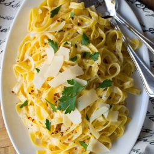

Alfredo Pasta

Classic alfredo
Where do I start? You’re going to absolutely love and want to devour this Vegan Garlic Alfredo Pasta. I’m talking cheesy, creamy, absolutely indulgent in taste kind of pasta dinner. The kind of dinner that totally hits the spot, and makes you want to curl up on a Friday night. Without the heavy feeling, of course. All my pasta cravings are hereby conquered.
First things first – I haven’t been a big pasta fanatic. LET me be clear. When a pasta dish is done well – I am all for that. If you’re a vegetarian or a vegan though, you know that lots of pasta dishes just are not done correctly. Kind of a leftover, oh yeah whoops, kind of scenario, and it can drive you to never want to have pasta again.
ingredients
- 12 ounces any pasta
- 1/2 red onion chopped
- 1 cup cashews soaked overnight, or in hot water for one hour
- 1/4 cup pasta water
- cloves roasted garlic
Steps
- Cook pasta according to package directions in a well salted pot of water. Reserve ¼ cup of the pasta water.
- While the pasta is boiling/you're waiting for the water to boil, in a pan over medium high heat, heat the vegan butter or olive oil. Add the onion, stir and let cook until translucent, about 5 minutes.
- Remove the onions from the pan and add it to a blender. Add the rinsed off soaked cashews (without the water), the pasta water, the almond milk, the roasted garlic, the nutritional yeast, the sea salt the vegan parmesan cheese and the lime juice. Blend it all together until completely creamy. If you have a high powered blender this will happen quickly, about 1 minute, if not, just keep blending until completely smooth and creamy. Taste and add more salt or vegan parmesan cheese if necessary.
- When the pasta is finished boiling, drain and pour back into the pan you had used earlier or even into a Tupperware container if you want. Pour the Alfredo sauce over and stir to combine completely.
- When serving, top with parsley to garnish and more vegan parmesan cheese. Enjoy!